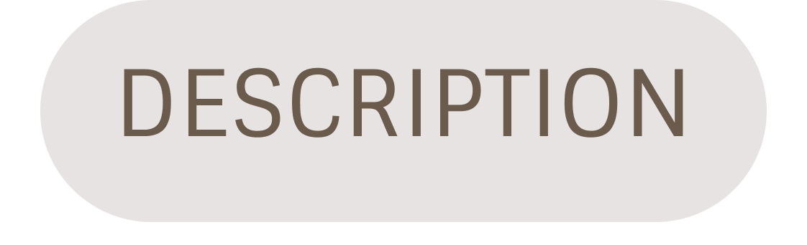
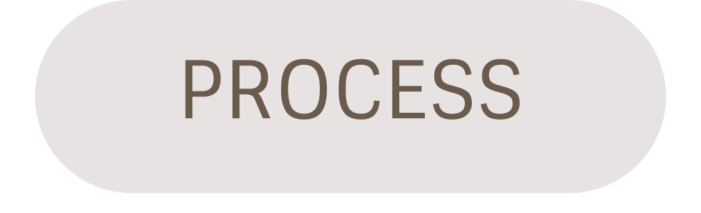

# Camera Life #
" Sometimes we need to capture the precious sceneries at the moments we are living in, don't you agree ? Let's have a sight of it. "

As a learning graphic designer and a person who loves photography , this kind of activity is definitely a therapy for me. Feeling joyed ? Capture it ! Feeling down ? Capture it as well ! Spot some nice plants and buildings ? Capture them.

# Splash to river #
Camera Setting : ISO 400
F5.6 - SS 1/ 200

# White Lamp #
Camera Setting : ISO 200
F5.6 - SS 1/ 125

# Coffee Break #
Camera Setting : ISO 400
F5.6 - SS 1/ 125


# Behind The Scenes #
Here is a rare footage of me handling and adjusting the camera ! Working hard on it !
 Level of interest towards this artwork?
Rate It !
Level of interest towards this artwork?
Rate It !